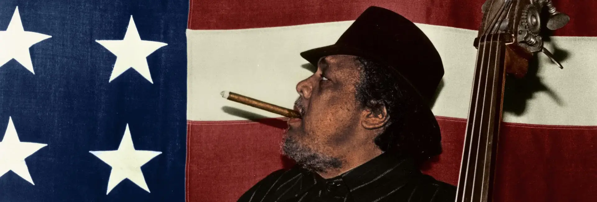
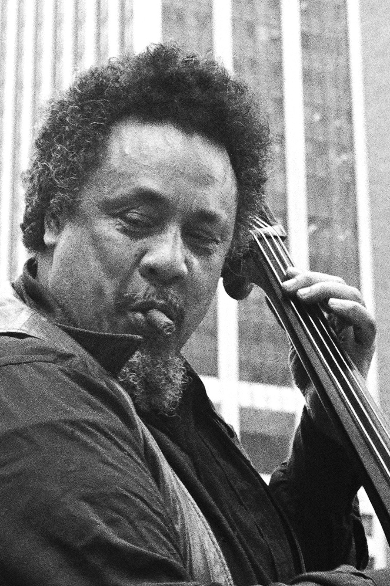
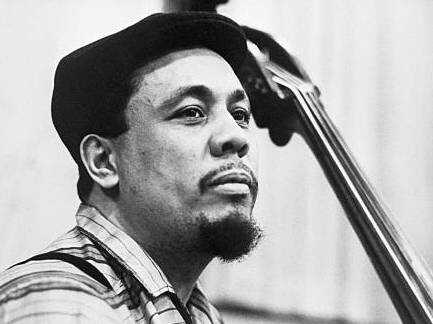
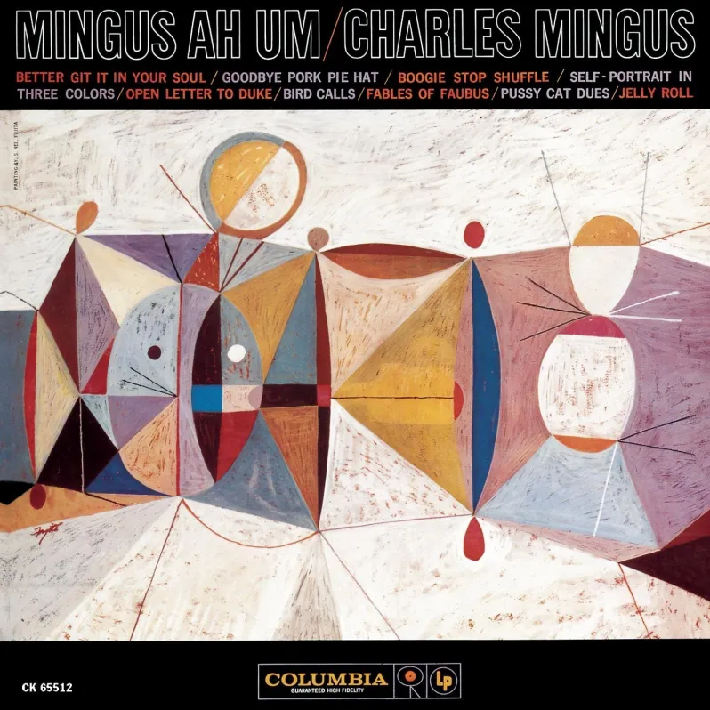
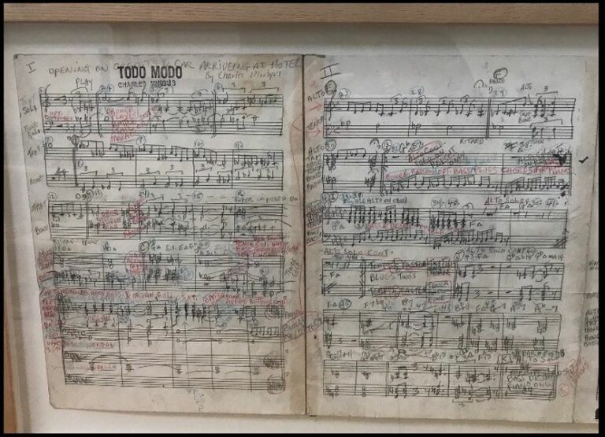

Charles Mingus
Who was he?

Charles Mingus Jr. (April 22, 1922 – January 5, 1979) was an American jazz upright bassist, pianist, composer, bandleader, and author. A major proponent of collective improvisation, he is considered to be one of the greatest jazz musicians and composers in history, with a career spanning three decades and collaborations with other jazz musicians such as Louis Armstrong, Duke Ellington, Charlie Parker, Dizzy Gillespie, and Herbie Hancock. Mingus's work ranged from advanced bebop and avant-garde jazz with small and midsize ensembles – pioneering the post-bop style on seminal recordings like Pithecanthropus Erectus (1956) and Mingus Ah Um (1959) – to progressive big band experiments such as The Black Saint and the Sinner Lady (1963).
Mingus's compositions continue to be played by contemporary musicians ranging from the repertory bands Mingus Big Band, Mingus Dynasty, and Mingus Orchestra, to the high school students who play the charts and compete in the Charles Mingus High School Competition. In 1993, the Library of Congress acquired Mingus's collected papers—including scores, sound recordings, correspondence and photos—in what they described as "the most important acquisition of a manuscript collection relating to jazz in the Library's history".
New York

In 1952, Mingus co-founded Debut Records with Max Roach so he could conduct his recording career as he saw fit. The name originated from his desire to document unrecorded young musicians. Despite this, the best-known recording the company issued was of the most prominent figures in bebop. On May 15, 1953, Mingus joined Dizzy Gillespie, Parker, Bud Powell, and Roach for a concert at Massey Hall in Toronto, which is the last recorded documentation of Gillespie and Parker playing together. After the event, Mingus chose to overdub his barely audible bass part back in New York; the original version was issued later. The two 10" albums of the Massey Hall concert (one featured the trio of Powell, Mingus and Roach) were among Debut Records' earliest releases. Mingus may have objected to the way the major record companies treated musicians, but Gillespie once commented that he did not receive any royalties "for years and years" for his Massey Hall appearance. The records, however, are often regarded as among the finest live jazz recordings.
One story has it that Mingus was involved in a notorious incident while playing a 1955 club date billed as a "reunion" with Parker, Powell, and Roach. Powell, who suffered from alcoholism and mental illness (possibly exacerbated by a severe police beating and electroshock treatments), had to be helped from the stage, unable to play or speak coherently. As Powell's incapacitation became apparent, Parker stood in one spot at a microphone, chanting "Bud Powell ... Bud Powell ..." as if beseeching Powell's return. Allegedly, Parker continued this incantation for several minutes after Powell's departure, to his own amusement and Mingus's exasperation. Mingus took another microphone and announced to the crowd, "Ladies and Gentlemen, please don't associate me with any of this. This is not jazz. These are sick people." This was Parker's last public performance; about a week later he died after years of substance abuse.
Mingus often worked with a mid-sized ensemble (around 8–10 members) of rotating musicians known as the Jazz Workshop. Mingus broke new ground, constantly demanding that his musicians be able to explore and develop their perceptions on the spot. Those who joined the Workshop (or Sweatshops as they were colorfully dubbed by the musicians) included Pepper Adams, Jaki Byard, Booker Ervin, John Handy, Jimmy Knepper, Charles McPherson and Horace Parlan. Mingus shaped these musicians into a cohesive improvisational machine that in many ways anticipated free jazz. Some musicians dubbed the workshop a "university" for jazz.
Ah Um Album

In 1959, Mingus and his jazz workshop musicians recorded one of his best-known albums, Mingus Ah Um. Even in a year of standout masterpieces, including Dave Brubeck's Time Out, Miles Davis's Kind of Blue, John Coltrane's Giant Steps, and Ornette Coleman's The Shape of Jazz to Come, this was a major achievement, featuring such classic Mingus compositions as "Goodbye Pork Pie Hat" (an elegy to Lester Young) and the vocal-less version of "Fables of Faubus" (a protest against segregationist Arkansas governor Orval Faubus that features double-time sections). In 2003 the album's legacy was cemented when it was inducted into the National Recording Registry. Also during 1959, Mingus recorded the album Blues & Roots, which was released the following year. Mingus said in his liner notes: "I was born swinging and clapped my hands in church as a little boy, but I've grown up and I like to do things other than just swing. But blues can do more than just swing."
Mingus witnessed Ornette Coleman's legendary—and controversial—1960 appearances at New York City's Five Spot jazz club. He initially expressed rather mixed feelings for Coleman's innovative music: "... if the free-form guys could play the same tune twice, then I would say they were playing something ... Most of the time they use their fingers on the saxophone and they don't even know what's going to come out. They're experimenting." That same year, however, Mingus formed a quartet with Richmond, trumpeter Ted Curson and multi-instrumentalist Eric Dolphy. This ensemble featured the same instruments as Coleman's quartet, and is often regarded as Mingus rising to the challenging new standard established by Coleman. The quartet recorded on both Charles Mingus Presents Charles Mingus and Mingus. The former also features the version of "Fables of Faubus" with lyrics, aptly titled "Original Faubus Fables".
In 1961, Mingus spent time staying at the house of his mother's sister (Louise) and her husband, Fess Williams, a clarinetist and saxophonist, in Jamaica, Queens. Subsequently, Mingus invited Williams to play at the 1962 Town Hall Concert.
Only one misstep occurred in this era: The Town Hall Concert in October 1962, a "live workshop"/recording session. With an ambitious program, the event was plagued with troubles from its inception. Mingus's vision, now known as Epitaph, was finally realized by conductor Gunther Schuller in a concert in 1989, a decade after Mingus died.
Outside of music, Mingus published a mail-order how-to guide in 1954 called The Charles Mingus CAT-alog for Toilet Training Your Cat. The guide explained in detail how to get a cat to use a human toilet. Sixty years later, in 2014, the late American character actor Reg E. Cathey performed a voice recording of the complete guide for Studio 360.
Personality and Later Life

Nearly as well known as his ambitious music was Mingus's often fearsome temperament, which earned him the nickname "The Angry Man of Jazz". His refusal to compromise his musical integrity led to many onstage eruptions, exhortations to musicians, and dismissals. Although respected for his musical talents, Mingus was sometimes feared for his occasionally violent onstage temper, which was at times directed at members of his band and other times aimed at the audience. He was physically large, prone to obesity (especially in his later years), and was by all accounts often intimidating and frightening when expressing anger or displeasure. When confronted with a nightclub audience talking and clinking ice in their glasses while he performed, Mingus stopped his band and loudly chastised the audience, stating: "Isaac Stern doesn't have to put up with this shit." Mingus destroyed a $20,000 bass in response to audience heckling at the Five Spot in New York City.
By the mid-1970s, Mingus was suffering from amyotrophic lateral sclerosis (ALS). His once formidable bass technique declined until he could no longer play the instrument. He continued composing, however, and supervised a number of recordings before his death. At the time of his death, he was working with Joni Mitchell on an album eventually titled Mingus, which included lyrics added by Mitchell to his compositions, including "Goodbye Pork Pie Hat". The album featured the talents of Wayne Shorter, Herbie Hancock, and another influential bassist and composer, Jaco Pastorius. Mingus in 1976 playing the double bass. Mingus died on January 5, 1979, aged 56, in Cuernavaca, Mexico, where he had traveled for treatment and convalescence. His ashes were scattered in the Ganges River.